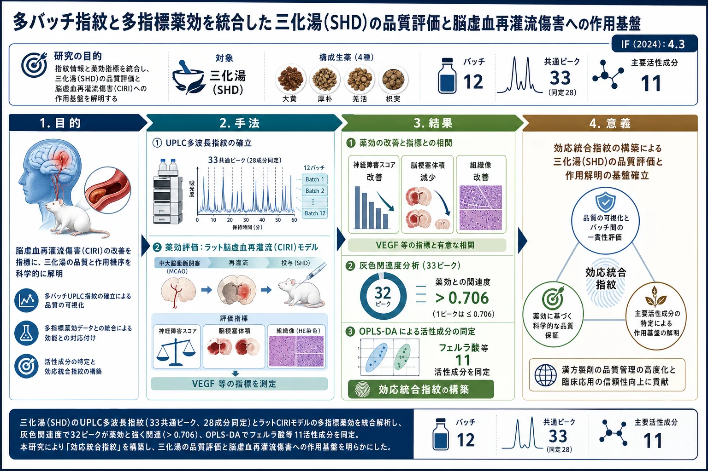

多バッチ指紋と多指標薬効を統合した三化湯(SHD)の品質評価と脳虚血再灌流傷害への作用基盤

<!-- 方針: ほぼ全訳＋必要に応じた補足。原文構成に沿って訳出。表・数値は保持し、全成分リスト等は原文参照とした。「> 補足:」は訳者注。 -->
書誌情報
- 原題: Multibatch Fingerprint Integrated with Multi-Indicator Efficacy for Quality Evaluation of Sanhua Decoction and Investigation of Its Mechanistic Basis against Cerebral Ischemia-Reperfusion Injury
- 著者: ... Liu, Kexin Ma, Jinxin Hou, Wei Li, Yi Sui ほか（貴州中医薬大学 中薬学院 ほか, 中国）
- 掲載: ACS Omega 2025, 10, 56539–56554. https://doi.org/10.1021/acsomega.5c08547（オープンアクセス）
- インパクトファクター: 4.3（ACS Omega, JCR 2024 / Clarivate）
- 受理経過: 受領 2025-08-26 / 改訂 2025-11-05 / 採録 2025-11-10 / 公開 2025-11-13
補足: SHD = 三化湯（Sanhua Decoction。大黄 Dahuang・厚朴 Houpo・羌活 Qianghuo・枳実 Zhishi の4生薬)。CIRI = 脳虚血再灌流傷害。スペクトル効果関係(spectrum-effect relationship) = 化学指紋(スペクトル)と薬効(効)を統計的に結びつけ、薬効に効く成分を推定する漢方の解析枠組み。GRA=灰色関連度分析、OPLS-DA=直交部分最小二乗判別分析、VEGF=血管内皮増殖因子、ANG=アンジオポエチン。
要旨（Abstract）
漢方のスペクトル効果関係理論に基づき、UPLCで12バッチの三化湯(SHD)の指紋を作成し、薬効との関連を解析して、CIRIに対するSHDの物質基盤解明と薬効評価の新戦略を提示した。UPLC指紋で33の共通ピークを同定し、28成分を特性化。ラットCIRIモデルの薬効評価で、SHDは神経障害スコアを有意に改善し脳梗塞体積を縮小、脳組織像を改善し、その効果は血管内皮増殖因子(VEGF)などの主要指標と相関した。灰色関連度分析(GRA)では、33ピーク中32ピークが薬効と関連度0.706超で、SHDの抗CIRI作用における多成分の相乗を確認。OPLS-DAで抗CIRI活性と有意に関連する11の主要活性化合物を同定。化学指紋と薬効指標を統合した「効応統合指紋(efficacy-integrated fingerprint)」を構築し、SHDの内在品質を反映させた。本法はSHDや他の漢方の化学成分探索と薬効物質基盤解明に、科学的で効率的なアプローチを提供する。
1. 序論（Introduction）
脳卒中は世界の死亡・長期障害の主要因で、障害原因1位・死亡原因2位。脳血管の破裂・閉塞で脳血流が急に途絶え、多系統機能障害を招く。3型（一過性脳虚血発作TIA・出血性・虚血性)のうち虚血性脳卒中が80〜90%を占め、血栓・塞栓による血流途絶が主因。虚血ペナンブラへの血流再開(再灌流) が最重要治療だが、再灌流は逆に神経損傷を悪化させうる(CIRI)。SHDは大黄・厚朴・羌活・枳実からなり、脳卒中(中風)に用いられてきた。本研究はHPLC/UPLC指紋と薬効の関連を確立し、抗CIRIの物質基盤を明らかにすることを目的とした。
2. 材料と方法（Materials and Methods）
試料・試薬
SHDは4生薬を各30.5 g（大黄・厚朴・羌活・枳実)で煎じて調製。標準品: バイカリン・エモジン誘導体・マグノロール・ホノキオール等(Solarbio)。ラット血管新生マーカーELISA: VEGF・ANG-1・ANG-2(Jiangsu Jingmei)。
UPLC条件（指紋）
- 装置: Agilent、ZORBAX Eclipse Plus C18（4.6 × 250 mm, 5 μm)、カラム温度 35 ℃
- 検出波長プログラム: 0–17 min 254 nm／17–38 min 310 nm／38–55 min 254 nm、注入量 5 μL
- 12バッチの指紋を作成。基準ピークは peak 12。
バリデーション
精度・再現性・安定性いずれも、共通ピークの相対保持時間(RRT)・相対ピーク面積(RPA)の RSD < 3%（n=6)（ICH Q2(R1)の許容基準 RSD ≤ 3.0%を満たす)。
薬効評価（ラットCIRIモデル）
中大脳動脈閉塞・再灌流でCIRIを作成。神経障害スコア、脳梗塞体積(TTC染色)、脳組織像(HE)を評価し、VEGF・ANG-1・ANG-2を投与2時間後に測定。
スペクトル効果解析
化学指紋(33共通ピーク)と薬効指標を、灰色関連度分析(GRA) と OPLS-DA で結びつけた。
3. 結果（Results）
指紋と成分同定
UPLC指紋で33共通ピークを同定し28成分を特性化。同定例（一部): (7)マグノリンB・(8)マグノフロリン・(9)ダイジン・(10)マグノリンA・(11)フェルラ酸・(12)アロエエモジン-8-O-β-グルコシド・(13)レイン-8-O-β-グルコシド・(14)デクルシン・(15)ラポンチシン・(16)ケルシトリン等（全同定は原文Table参照。ヘスペリジン・ネオヘスペリジン・エモジン-1-O-グルコシド・クリソファノール-8-O-β-グルコシド・アロエエモジン・レイン・ノビレチン等を含む)。由来生薬（大黄=アントラキノン/スチルベン、厚朴=リグナン/アルカロイド、枳実=フラボノイド、羌活=クマリン)にまたがる。
バリデーション
精度・再現性・安定性のRRT/RPAはいずれもRSD<3%で、装置精度・方法の再現性が良好。
薬効（CIRI）
SHDは神経障害スコアを有意に改善、脳梗塞体積を縮小、脳組織像を改善。効果は血管新生マーカー(VEGF等)と相関。神経障害なし(スコア0)を示した対照的なバッチは他バッチより類似度が有意に低く、化学組成の差が薬効差につながることを示唆。
スペクトル効果関係
GRA: 33ピーク中32ピークが薬効との関連度0.706超で、多成分の相乗効果を確認（GRAは関連の方向〈正/負〉は示せない)。OPLS-DA: 抗CIRI活性と有意に関連する11の主要活性成分を同定（フェルラ酸・アロエエモジン-8-O-β-グルコシド・クロロゲン酸などを含む)。200回の並べ替え検定で、元のR²・Q²が並べ替えモデルより有意に高く、切片も妥当で過学習なし。OPLS-DAの結論はGRAの結果に支持された。
効応統合指紋
化学指紋と薬効指標を統合した「効応統合指紋(efficacy-integrated fingerprint)」を構築し、SHDの内在品質(化学＋薬効)を1つの枠組みで反映させた。
4. 結論（Conclusions）
本研究は12バッチのSHDのUPLC指紋(33共通ピーク・28成分同定)を確立し、ラットCIRIモデルの薬効(神経障害スコア・脳梗塞体積・血管新生マーカー)と結びつけた。GRA(32/33ピークが関連度>0.706)とOPLS-DA(11活性成分)により、抗CIRI作用の物質基盤を多成分の相乗として提示し、化学と薬効を統合した「効応統合指紋」を構築。SHDや他の漢方の成分探索・薬効物質基盤解明に科学的・効率的なアプローチを与える。
補足（実務的示唆）: 「指紋(化学)だけ」でも「薬理(効)だけ」でもなく、両者を統計で結んで“効く成分”を絞るスペクトル効果研究の典型例。実務の要点は——①UPLC多波長指紋(254/310/254 nm)で由来生薬をまたぐ33ピークを面で捉える、②同一バッチで薬効(CIRIモデル)も測る、③GRAで全ピークの薬効寄与を横断的にスクリーニング(32/33が関連度>0.706＝相乗)、④OPLS-DA(VIP・並べ替え検定で過学習チェック)で寄与の大きい11成分に絞る、という多段設計。単一マーカー管理では拾えない“薬効連動の品質”を、効応統合指紋という1つの尺度に落とし込む発想が、生薬QCで「規格成分＝薬効成分」を近づける方向性を示す。本サイト収録の他のスペクトル効果論文(五味清濁丸・ReDuNing注射剤)と同じ系統で読める。